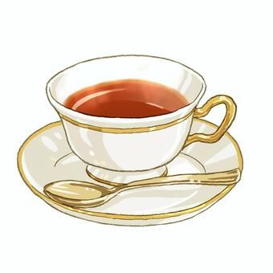

home
Tea

So here are the exact ingredients you need to make a Tea
- Milk
- Tea powder
- Water
- Sweetener(Sugar,Brown Sugar etc.)
Steps
- Boil Water: Heat water, adding fresh ginger and spices early to allow them to steep.
- Add Tea & Sugar: Add tea powder/leaves and sugar, boiling for a few minutes
- Add Milk: Pour in milk and bring the mixture to a boil.
- Strain & Serve: Strain the tea into cups to remove the leaves and spices.
Now Enjoy Your Tea